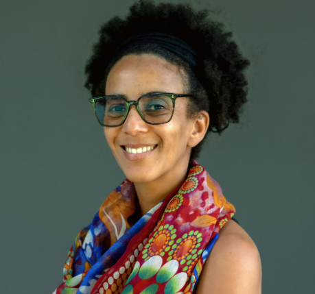

Beyong Big Data: Dr. Timnit Gebru's Work
on Bias and AI Ethics

Dr. Timnit Gebru is an AI researcher whose work focuses on bias, representation, and the social impacts of artificial intelligence. She earned her PhD from the Stanford Artificial Intelligence Laboratory, where she studied computer vision. She later worked on algorithmic bias and the ethical implications of AI at Microsoft Research and Google. She also co- founded Black in AI and later founded the Distributed AI Research Institute (DAIR), which supports research focused on the social impacts of AI.
Her research has examined bias in facial recognition systems and large language models. Her work shows that using more data does not automatically make an AI system more fair or representative. If the data already reflects social inequalities or leaves out certain groups, those problems can also appear in the systems trained on it. She has also emphasized that technical fixes alone are not enough because the people, institutions, and decisions behind technology can shape how these systems affect society.
Her work looks beyond technical performance to consider the social impact of AI.
Learn more about Dr. Timnit Gebru's work on bias and the real-world impacts of AI.
This talk explains how bias can appear in AI systems and why technical solutions alone are not enough.
Related Resources
This paper examines the risks of large language models, including biased training data, environmental costs, and harms to marginalized communities.
This WIRED interview revisits Stochastic Parrots and discusses current concerns around AI, data transparency, regulation, and automation bias.
This 60 Minutes interview explains why larger datasets do not always represent diverse perspectives and how bias can appear in large language models.